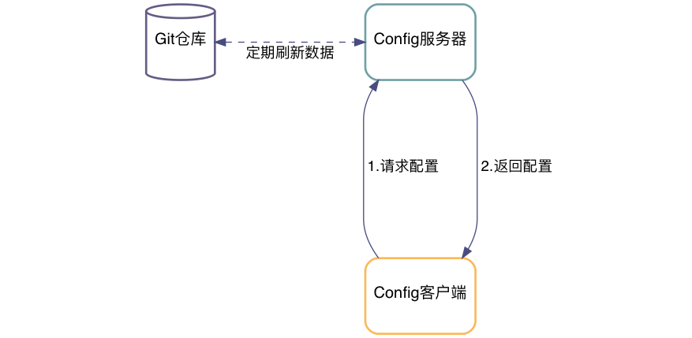

Spring Cloud
Table of Contents
1 简介
Spring Cloud 是一系列框架的有序集合。它利用 Spring Boot 的开发便利性巧妙地简化 了分布式系统基础设施的开发，如服务发现注册、配置中心、消息总线、负载均衡、断路 器、数据监控等，都可以用 Spring Boot 的开发风格做到一键启动和部署。Spring Cloud 并没有重复制造轮子，它只是将目前各家公司开发的比较成熟、经得起实际考验的 服务框架组合起来，通过 Spring Boot 风格进行再封装屏蔽掉了复杂的配置和实现原理， 最终给开发者留出了一套简单易懂、易部署和易维护的分布式系统开发工具包。
2 Spring Cloud Config
Spring Cloud Config 项目是一个解决分布式系统的配置管理方案。它包含了 Client 和 Server 两个部分，Server 提供配置文件的存储、以接口的形式将配置文件的内容提 供出去，Client 通过接口获取数据、并依据此数据初始化自己的应用。

2.1 配置文件命名格式
- 配置文件命名方式为: {appname}-{profile}.yml
- appname 是微服务的名称
- profile 是不同的环境，建议用:
dev表示开发环境，prod表示线 上运行环境
- 对应请求的 URI 有以下几种格式
/{application}/{profile}[/{label}]/{application}-{profile}.yml/{label}/{application}-{profile}.yml/{application}-{profile}.properties/{label}/{application}-{profile}.properties
2.2 Config Server
2.2.1 项目依赖
在 pom.xml 文件中添加如下的依赖项
<project> <dependencies> <dependency> <groupId>org.springframework.cloud</groupId> <artifactId>spring-cloud-config-server</artifactId> </dependency> </dependencies> <dependencyManagement> <dependencies> <dependency> <groupId>org.springframework.cloud</groupId> <artifactId>spring-cloud-dependencies</artifactId> <version>Greenwich.SR2</version> <type>pom</type> <scope>import</scope> </dependency> </dependencies> </dependencyManagement> </project>
2.2.2 引导类
中心服务器的引导累着需要添加 @EnableConfigServer 来启用配置服务器
import org.springframework.boot.SpringApplication; import org.springframework.boot.autoconfigure.SpringBootApplication; import org.springframework.cloud.config.server.EnableConfigServer; @SpringBootApplication @EnableConfigServer public class Application { public static void main(String[] args) { SpringApplication.run(Application.class, args); } }
2.2.3 Git 远端配置项
在中心配置服务器中的 application.yml 中添加相应的配置
spring: profiles: active: default cloud: config: server: git: uri: http://github.com/avic/configfiles.git searchPaths: - path1 - path2 username: user password: pass
2.3 Config Client
2.3.1 配置相关文件
首先修改 pom.xml, application.yml 和 bootstrap.yml 这三项配置文件
<!-- pom.xml --> <project> <!-- 1. 添加下面四个依赖项 --> <dependencies> <dependency> <groupId>org.springframework.cloud</groupId> <artifactId>spring-cloud-starter-config</artifactId> </dependency> <dependency> <groupId>org.springframework.boot</groupId> <artifactId>spring-boot-starter-actuator</artifactId> </dependency> <dependency> <groupId>org.springframework.boot</groupId> <artifactId>spring-boot-starter-web</artifactId> </dependency> <dependency> <groupId>org.springframework.boot</groupId> <artifactId>spring-boot-starter-test</artifactId> <scope>test</scope> </dependency> </dependencies> <!-- 2. 设置依赖管理 --> <dependencyManagement> <dependencies> <dependency> <groupId>org.springframework.cloud</groupId> <artifactId>spring-cloud-dependencies</artifactId> <!-- 这个 version 需要和你使用的 spring boot 版本适配，否则应用起不来 --> <version>Greenwich.SR2</version> <!-- 我的项目中 spring boot 版本是 2.1.0.RELEASE, 所以 cloud 的版本使用 Greenwich --> <type>pom</type> <scope>import</scope> </dependency> </dependencies> </dependencyManagement> </project>
# src/main/resources/application.yml management: endpoints: web: exposure: include: '*'
# src/main/resources/bootstrap.yml spring: application: name: appname # 这里写你项目的名称 profiles: active: dev # 这里配置你需要的 profile cloud: config: uri: http://192.168.0.231/peizhi
2.3.2 引导类
在系统启动的引导类中添加 @RefreshScope 注解
import org.springframework.boot.autoconfigure.SpringBootApplication; import org.springframework.cloud.context.config.annotation.RefreshScope; @SpringBootApplication @RefreshScope public class Application { public static void main(String[] args) { SpringApplication.run(Application.class, args); } }
3 Spring Cloud Netflix
Spring Cloud Netflix 是通过自动配置和绑定提供为 spring boot 应用提供 OSS 集成 功能，它的子项目包括：
- Eureka: 服务发现 (Service Discovery)
- Hystrix : 断路器 (Circuit Breaker)
- Zuul : 智能路由 (Intelligent Routing)
- Ribbon : 客户端的负载均衡 (Client Side Load Balancing)
官方是参考手册见 2.2.0.M1
3.1 Eureka
Eureka 是 Spring Cloud Netflix 开发的服务发现框架，本身是一个基于 REST 的服 务。Spring Cloud 将它集成在其子项目 spring-cloud-netflix 中，以实现 Spring Cloud 的服务发现功能。 Eureka 项目本身包括客户端和服务器两个子项目，具体配置 如下：
3.1.1 Eureka Client
- 配置相关文件
pom.xml添加spring-cloud-starter-netflix-eureka-client的依赖项<!-- pom.xml --> <project> <dependencies> <dependency> <groupId>org.springframework.cloud</groupId> <artifactId>spring-cloud-starter-netflix-eureka-client</artifactId> </dependency> </dependencies> </project>
application.yml添加配置项eureka: instance: instanceId: app-instance-id hostname: my.app.host nonSecurePort: 8080 # http 请求的端口号 client: fetchRegistry: true registerWithEureka: true serviceUrl: defaultZone: http://localhost:8761/eureka/
如果开启
preferIpAddress就会忽略hostname，因为有的时候微服务被部署 到 docker 容器中，主机名可能是随机分配的，不好管理可以考虑建立个 docker 的 内网，使用 IP 直接注册。eureka: instance: preferIpAddress: true # 使用 IP 地址注册，而不是使用主机名注册
- 配置引导类
spring-cloud-starter-netflix-eureka-client依赖项后会将当前项目自动注册 到 Eureka Server 上@SpringBootApplication @RestController public class Application { @RequestMapping("/") public String home() { return "Hello world"; } public static void main(String[] args) { new SpringApplicationBuilder(Application.class).web(true).run(args); } }
也可以使用
@EnableDiscoveryClient的注解来显示激活
3.1.2 Eureka Server
- 配置相关文件
pom.xml添加spring-cloud-starter-netflix-eureka-server的依赖项<!-- pom.xml --> <project> <dependencies> <dependency> <groupId>org.springframework.cloud</groupId> <artifactId>spring-cloud-starter-netflix-eureka-server</artifactId> </dependency> </dependencies> </project>
application.yml添加配置项，下面是 Standalone 模式的配置方法eureka: instance: hostname: localhost client: fetchRegistry: false # 不要在本地缓存注册表信息 registerWithEureka: false serverUrl: defaultZone: http://localhost:8761/eureka/ server: waitTimeInMsWhenSyncEmpty: 5 # 在服务器接收请求之前的等待时间
Peer Awareness 模式配置方法如下：
--- spring: profiles: peer1 eureka: instance: hostname: peer1 client: serviceUrl: defaultZone: https://peer2/eureka/ --- spring: profiles: peer2 eureka: instance: hostname: peer2 client: serviceUrl: defaultZone: https://peer1/eureka/
- 配置引导类
使用
@EnableEurekaServer来开启 Eureka Server@SpringBootApplication @EnableEurekaServer public class Application { public static void main(String[] args) { new SpringApplicationBuilder(Application.class).web(true).run(args); } }
3.2 Hystrix
Hystrix 是 SOA 微服务架构中提供服务隔离、熔断、降级机制的工具/框架。Hystrix 是断路器的一种实现，用于高微服务架构的可用性，是防止服务出现雪崩的利器。 Hystrix 实现了 Martin Fowler 的 Circuit Breaker 模式，熔断器的机制的思想很简 单直白，即在 Client 和 Supplier 之间实现一个 Circuit Breaker 层，当 Supplier 出现错误或超时，就对 Client 的请求进行截断
3.2.1 Hystrix Client
- 配置相关文件
pom.xml添加spring-cloud-starter-netflix-hystrix的依赖项<!-- pom.xml --> <project> <dependencies> <dependency> <groupId>org.springframework.cloud</groupId> <artifactId>spring-cloud-starter-netflix-hystrix</artifactId> </dependency> <dependency> <groupId>com.netflix.hystrix</groupId> <artifactId>hystrix-javanica</artifactId> <!-- <version>x.y.z</version> --> </dependency> </dependencies> </project>
- 配置引导类
@SpringBootApplication @EnableCircuitBreaker public class Application { public static void main(String[] args) { new SpringApplicationBuilder(Application.class).web(true).run(args); } } @Component public class StoreIntegration { @HystrixCommand(fallbackMethod = "defaultStores") public Object getStores(Map<String, Object> parameters) { //do stuff that might fail } public Object defaultStores(Map<String, Object> parameters) { return /* something useful */; } }
@HystrixCommand由 javanica 库提供，该库可以自动代理一些熔断处理。@EnableCircuitBreaker开启熔断器 - 弹性模式
Hystrix 的常见弹性模式有以下几种：
- 断路器模式：确保客户端不会重复调用失败的服务
- 后备模式：调用失败后，询问是否有可以执行的替代方案
- 舱壁模式：隔断服务客户端上的不同服务调用，以确保表现不佳的服务不会耗尽客 户端的所有资源
3.2.2 Hystrix Dashboard
Hystrix 监控除了隔离依赖服务的调用以外，Hystrix 还提供了近实时的监控，
Hystrix 会实时、累加地记录所有关于 HystrixCommand 的执行信息，包括每秒执行多
少请求多少成功，多少失败等。Netflix 通过 hystrix-metrics-event-stream 项
目实现了对以上指标的监控。
3.3 Zuul
Zuul 是在云平台上提供动态路由,监控,弹性,安全等边缘服务的框架。Zuul 相当于是 设备和 Netflix 流应用的 Web 网站后端所有请求的前门

- 配置相关文件
pom.xml添加spring-cloud-starter-netflix-zuul的依赖项将 Zuul 引入项目<!-- pom.xml --> <project> <dependencies> <dependency> <groupId>org.springframework.cloud</groupId> <artifactId>spring-cloud-starter-netflix-zuul</artifactId> </dependency> </dependencies> </project>
- 配置引导类
@SpringBootApplication @EnableZuulProxy public class Application { public static void main(String[] args) { new SpringApplicationBuilder(Application.class).web(true).run(args); } }
@EnableZuulProxy来开启 Zuul 服务 - 配置反向代理
Zuul 的反向代理使用的是以下几种方式进行设置
- 通过服务发现自动映射路由
- 通过服务发现手动映射路由
- 通过静态 URL 手动映射路由
使用
@EnableZuulProxy开启 Zuul 服务后，如果正确地配置了 Eureka Client 服务的话，不需要进行其它的配置就可以自动映射路由。根据惯例，Zuul 会自动给 反向代理的微服务添加前缀，例如： 如果微服务的名字是users，则 Zuul 会将/users/**的请求全部映射到users微服务中手动配置反向代理需要修改
application.yml配置文件，例如下面的配置将/myusers/**请求传递到users微服务中zuul: routes: users: path: /myusers/** serviceId: users_service
使用静态 URL 手动映射路由
zuul: routes: users: path: /myusers/** url: https://example.com/users_service
- 忽略某些微服务
Zuul 允许配置对一些微服务的忽略项
# 忽略所有微服务 zuul: ignoredServices: '*' routes: users: /myusers/** # 忽略某个微服务，微服务的名字为 appname zuul: ignoredServices: 'appname' routes: users: /myusers/** # 添加统一的前缀 /api zuul: ignoredServices: '*' prefix: /api routes: users: /myusers/** # 忽略所有带有 /admin/ 路由的调用接口 zuul: ignoredPatterns: /**/admin/** routes: users: /myusers/**
- 头部的设置选项
将
Cookies,Set-Cookie,Authorization设置成敏感的头部，忽略一些头部zuul: routes: users: path: /myusers/** # Cookies 和敏感的头部 sensitiveHeaders: Cookie,Set-Cookie,Authorization # 忽略的头部 ignoredHeaders: Header1 # 是否忽略安全头部 ignoreSecurityHeaders: true url: https://downstream
- 管理端点 Endpoint
Zuul 提供了一些管理路由的 RESTful 接口
GET /routes获取所有解析的路由GET /routes/detail获取详细路由信息POST /routes强制刷新路由GET /filter获取所有的过滤器
下面是一些示例
curl http://localhost/routes
{ "/stores/**": "http://localhost:8081" }curl http://localhost/routes/detail
{ "/stores/**": { "id": "stores", "fullPath": "/stores/**", "location": "http://localhost:8081", "path": "/**", "prefix": "/stores", "retryable": false, "customSensitiveHeaders": false, "prefixStripped": true } } - 基本使用场景
如下所示将相关路由反向代理到对应的 URL
原始请求 代理后的请求 /fisrt/1 https://first.exmple.com/1 /second/2 /second/2 /third/3 /3rd/3 /no https://legacy.example.com/no zuul: routes: first: path: /first/** url: https://first.example.com second: path: /second/** url: forward:/second third: path: /third/** url: forward:/3rd legacy: path: /** url: https://legacy.example.com
Zuul 的详细配置见 Zuul wiki
- 过滤器
前置过滤器（Pre Filter）的在请求之前先进行处理，设置
RequestContext的相 关参数提供后面的处理public class QueryParamPreFilter extends ZuulFilter { @Override public int filterOrder() { return PRE_DECORATION_FILTER_ORDER - 1; // run before PreDecoration } @Override public String filterType() { return PRE_TYPE; } @Override public boolean shouldFilter() { RequestContext ctx = RequestContext.getCurrentContext(); return !ctx.containsKey(FORWARD_TO_KEY) // a filter has already forwarded && !ctx.containsKey(SERVICE_ID_KEY); // a filter has already determined serviceId } @Override public Object run() { RequestContext ctx = RequestContext.getCurrentContext(); HttpServletRequest request = ctx.getRequest(); if (request.getParameter("sample") != null) { // put the serviceId in `RequestContext` ctx.put(SERVICE_ID_KEY, request.getParameter("foo")); } return null; } }
路由过滤器（Route Filter）在前置过滤器之后，请求其它服务之前。通常路由过滤 器用来转义请求和回复的数据，下面是一个例子
public class OkHttpRoutingFilter extends ZuulFilter { @Autowired private ProxyRequestHelper helper; @Override public String filterType() { return ROUTE_TYPE; } @Override public int filterOrder() { return SIMPLE_HOST_ROUTING_FILTER_ORDER - 1; } @Override public boolean shouldFilter() { return RequestContext.getCurrentContext().getRouteHost() != null && RequestContext.getCurrentContext().sendZuulResponse(); } @Override public Object run() { OkHttpClient httpClient = new OkHttpClient.Builder() // customize .build(); RequestContext context = RequestContext.getCurrentContext(); HttpServletRequest request = context.getRequest(); String method = request.getMethod(); String uri = this.helper.buildZuulRequestURI(request); Headers.Builder headers = new Headers.Builder(); Enumeration<String> headerNames = request.getHeaderNames(); while (headerNames.hasMoreElements()) { String name = headerNames.nextElement(); Enumeration<String> values = request.getHeaders(name); while (values.hasMoreElements()) { String value = values.nextElement(); headers.add(name, value); } } InputStream inputStream = request.getInputStream(); RequestBody requestBody = null; if (inputStream != null && HttpMethod.permitsRequestBody(method)) { MediaType mediaType = null; if (headers.get("Content-Type") != null) { mediaType = MediaType.parse(headers.get("Content-Type")); } requestBody = RequestBody.create(mediaType, StreamUtils.copyToByteArray(inputStream)); } Request.Builder builder = new Request.Builder() .headers(headers.build()) .url(uri) .method(method, requestBody); Response response = httpClient.newCall(builder.build()).execute(); LinkedMultiValueMap<String, String> responseHeaders = new LinkedMultiValueMap<>(); for (Map.Entry<String, List<String>> entry : response.headers().toMultimap().entrySet()) { responseHeaders.put(entry.getKey(), entry.getValue()); } this.helper.setResponse(response.code(), response.body().byteStream(), responseHeaders); context.setRouteHost(null); // prevent SimpleHostRoutingFilter from running return null; } }
后置路由器（Post Filter）主要处理回复，下面是一个添加
UUID和X-Sample头的例子public class AddResponseHeaderFilter extends ZuulFilter { @Override public String filterType() { return POST_TYPE; } @Override public int filterOrder() { return SEND_RESPONSE_FILTER_ORDER - 1; } @Override public boolean shouldFilter() { return true; } @Override public Object run() { RequestContext context = RequestContext.getCurrentContext(); HttpServletResponse servletResponse = context.getResponse(); servletResponse.addHeader("X-Sample", UUID.randomUUID().toString()); return null; } }
3.4 Ribbon
Ribbon 是 Netflix 发布的开源项目，主要功能是提供客户端的软件负载均衡算法，将 Netflix 的中间层服务连接在一起。Ribbon 客户端组件提供一系列完善的配置项如连 接超时，重试等。简单的说，就是在配置文件中列出 Load Balancer（简称 LB）后面 所有的机器，Ribbon 会自动的帮助你基于某种规则（如简单轮询，随即连接等）去连 接这些机器。我们也很容易使用 Ribbon 实现自定义的负载均衡算法。
3.4.1 Ribbon Client
- 配置相关文件
pom.xml添加spring-cloud-starter-netflix-ribbon的依赖项<!-- pom.xml --> <project> <dependencies> <dependency> <groupId>org.springframework.cloud</groupId> <artifactId>spring-cloud-starter-netflix-ribbon</artifactId> </dependency> </dependencies> </project>
users: ribbon: NIWSServerListClassName: com.netflix.loadbalancer.ConfigurationBasedServerList NFLoadBalancerRuleClassName: com.netflix.loadbalancer.WeightedResponseTimeRule
- 使用配置类来进行配置
Ribbon 支持使用配置类来配置，使用
@RibbonClient注解进行相关配置// 设置默认调用的配置类 @RibbonClients(defaultConfiguration = DefaultRibbonConfig.class) public class RibbonClientDefaultConfigurationTestsConfig { public static class BazServiceList extends ConfigurationBasedServerList { public BazServiceList(IClientConfig config) { super.initWithNiwsConfig(config); } } } // 客户端配置实现类 @Configuration class DefaultRibbonConfig { @Bean public IRule ribbonRule() { return new BestAvailableRule(); } @Bean public IPing ribbonPing() { return new PingUrl(); } @Bean public ServerList<Server> ribbonServerList(IClientConfig config) { return new RibbonClientDefaultConfigurationTestsConfig.BazServiceList(config); } @Bean public ServerListSubsetFilter serverListFilter() { ServerListSubsetFilter filter = new ServerListSubsetFilter(); return filter; } }
Ribbon 客户端的配置, 如果不指定会使用默认的实现:
IClientConfig客户端相关配置IRule定义负载均衡策略IPing定义如何 ping 目标服务实例来判断是否存活, ribbon 使用单独的线程 每隔一段时间(默认 10s)对本地缓存的ServerList做一次检查ServerList定义如何获取服务实例列表. 两种实现基于配置的ConfigurationBasedServerList和基于 Eureka 服务发现的DiscoveryEnabledNIWSServerListServerListFilter用来使用期望的特征过滤静态配置动态获得的候选服务实例 列表. 若未提供, 默认使用ZoneAffinityServerListFilterILoadBalancer定义了软负载均衡器的操作的接口. 一个典型的负载均衡器至少需 要一组用来做负载均衡的服务实例, 一个标记某个服务实例不在旋转中的方法, 和 对应的方法调用从实例列表中选出某一个服务实例.ServerListUpdaterDynamicServerListLoadBalancer用来更新实例列表的 策略- 推 ->
EurekaNotificationServerListUpdater - 拉 ->
PollingServerListUpdater默认是拉
- 推 ->
4 Spring Cloud Gateway
Spring Cloud Gateway 是 Spring 官方基于 Spring 5.0，Spring Boot 2.0 和 Project Reactor 等技术开发的网关，Spring Cloud Gateway 旨在为微服务架构提供一种简单而有 效的统一的 API 路由管理方式，官方的手册见 2.2.0.M1